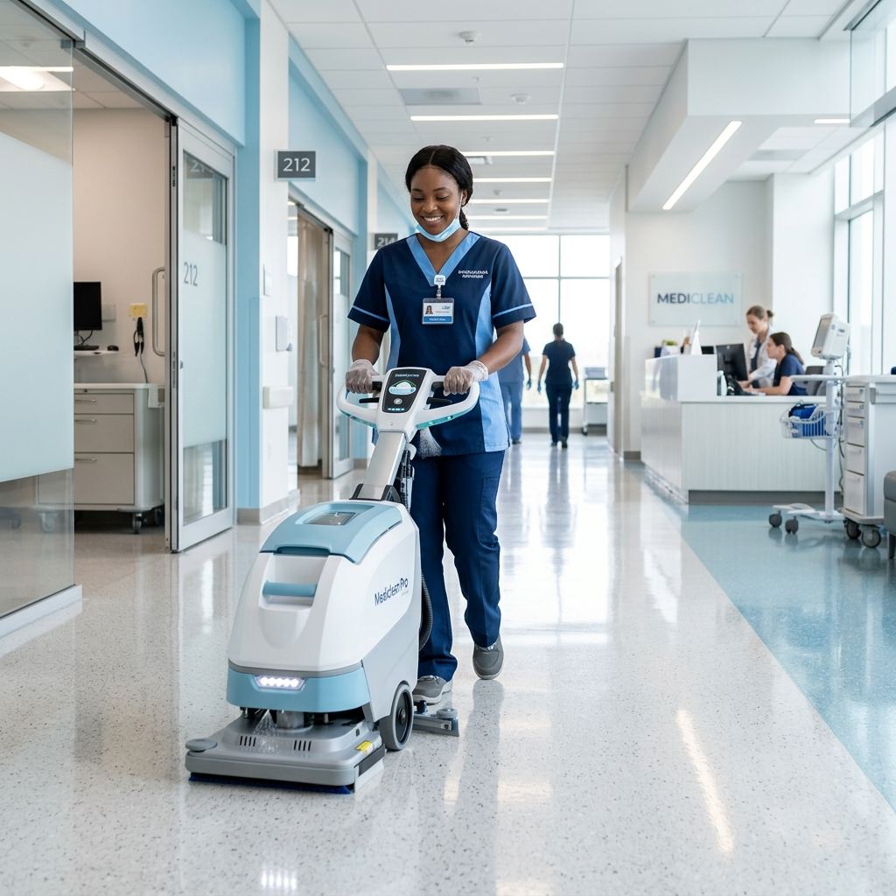

Revolutionizing Hospital Hygiene
In modern healthcare facilities, maintaining pristine sanitary conditions is critical to preventing hospital-acquired infections (HAIs). Standard cleaning schedules often miss localized spikes in usage.
SanitizeQ bridges this gap by acting as a responsive management system. Our platform empowers staff and patients to communicate issues instantly, while automated tracking allows administrators to visualize the sanitation status of massive hospital wings at a single glance.
- Advanced user-driven alerts & analytics.
- Direct dispatch linking for janitorial services.
- Intuitive status dashboards across all floors.
The Importance of Smart Sanitation
Infection Control
Minimizing the spread of pathogens through rapid response and verified cleaning protocols.
Staff Efficiency
Directing cleaning staff precisely where they are needed rather than relying solely on arbitrary routine schedules.
Patient Experience
Enhancing comfort and trust for patients and their visiting families during stressful periods.